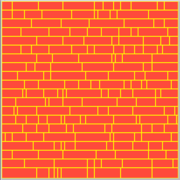
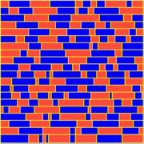

Contents[hide] |
- Wikipedia page defining Validation (and Verification) for software engineering.
For CompuCell3D, we need to validate consistent output results of simulations, for example, while the underlying algorithms/code are under development.
In order to generate reproducible simulations, it is necessary to:
These are accomplished, respectively, via the following (examples) in the .xml config file:
<Potts>
...
<RandomSeed>3</RandomSeed>
</Potts>
<Steppable Type="PIFInitializer">
<PIFName>my_foam.pif</PIFName>
</Steppable>
$ cat foamPIF.py
import random
random.seed(13) # for reproducibility, seed the random # generator
total_height=100
total_width=100
num_rows = 20
row_height = total_height/num_rows
x0 = y0 = 0
z0 = z1 = 0
cellNum = 0
for row in range(num_rows):
x0 = 0
y1 = y0 + row_height
while True:
cell_width = random.randint(2,20)
x1 = x0 + cell_width
if x1 > total_width:
print "%d Foam %d %d %d %d %d %d" % (cellNum,x0,total_width,y0,y1,z0,z1)
cellNum += 1
break
print "%d Foam %d %d %d %d %d %d" % (cellNum,x0,x1,y0,y1,z0,z1)
cellNum += 1
x0 = x1
y0 += row_height
$ python foamPIF.py > my_foam.pif

$ cat time_Foam_Coarsening.xml
<CompuCell3D>
<!-- The Potts section defines paramters that are used in the Metropolis algorithm-->
<!-- It also defines lattice parameters, flip neighbors and boundary conditions-->
<Potts>
<Dimensions x="101" y="101" z="1"/>
<Anneal>0</Anneal>
<Steps>1000</Steps>
<Temperature>5</Temperature>
<Flip2DimRatio>1.0</Flip2DimRatio>
<Boundary_y>Periodic</Boundary_y>
<Boundary_x>Periodic</Boundary_x>
<NeighborOrder>2</NeighborOrder>
<RandomSeed>3</RandomSeed>
</Potts>
<!--In every CompuCell simulation you need to list all the cell types that you will be using-->
<!--This is done in the CellType Plugin - as shown below-->
<Plugin Name="CellType">
<CellType TypeName="Medium" TypeId="0"/>
<CellType TypeName="Foam" TypeId="1"/>
</Plugin>
<!--Contact Plugin calculates change in contact energy due to spin flip attempt -->
<!--You specify contact energies between cell types and how many levels of neighbors (Depth parameter)
should be included in energy calculations -->
<!--Depth tells CompuCell the maximum distance - measured in pixels - up to which it should search
for neighbors to be included in contact energy calculations-->
<Plugin Name="Contact">
<Energy Type1="Foam" Type2="Foam">3</Energy>
<Energy Type1="Medium" Type2="Medium">0</Energy>
<Energy Type1="Medium" Type2="Foam">0</Energy>
<NeighborOrder>3</NeighborOrder>
</Plugin>
<!--Volume plugin puts constraint on cell volume. You also need to include it when you want CompuCell
to update volume of cells-->
<!--The stronget LambdaVolume therestrictive constraint -->
<!--Below LambdaVolume=0 which means ther is no constraint. However we use this plugin to get
up-to-date volume information for every cell-->
<Plugin Name="Volume">
<TargetVolume>25</TargetVolume>
<LambdaVolume>0</LambdaVolume>
</Plugin>
<!-- Analogous to volume plugin-->
<Plugin Name="Surface">
<TargetSurface>17</TargetSurface>
<LambdaSurface>0</LambdaSurface>
</Plugin>
<!--This steppable initializes cells on the lattice. It reads an ascii file (Potts Initialization File, PIF).
As an initializer it is called only once per simulation -->
<Steppable Type="PIFInitializer">
<PIFName>my_foam.pif</PIFName>
</Steppable>
<!-- This steppable outputs current state the simulation - here , for every cell we output cellId,
volume, surface, number of neighbors-->
<Steppable Type="FoamDataOutput" Frequency="10">
<Output CellID="" Volume="" Surface="" NumberOfNeighbors=""/>
</Steppable>
</CompuCell3D>
$ cat Output.1000 88 997 176 7 4 543 126 6 25 1131 174 8 37 112 46 4 61 1193 190 6 67 368 108 5 122 118 58 4 119 2001 238 8 104 575 126 6 159 758 154 7 160 216 80 5 182 239 76 5 194 1670 204 8 201 280 84 5
Tweaking the above PIF generating Python script with the following, we can generate a PIF for cellsorting:
if (cellNum % 2) == 0:
cellName = "Condensing"
else:
cellName = "NonCondensing"
print "%d %s %d %d %d %d %d %d" % (cellNum,cellName,x0,total_width,y0,y1,z0,z1)
